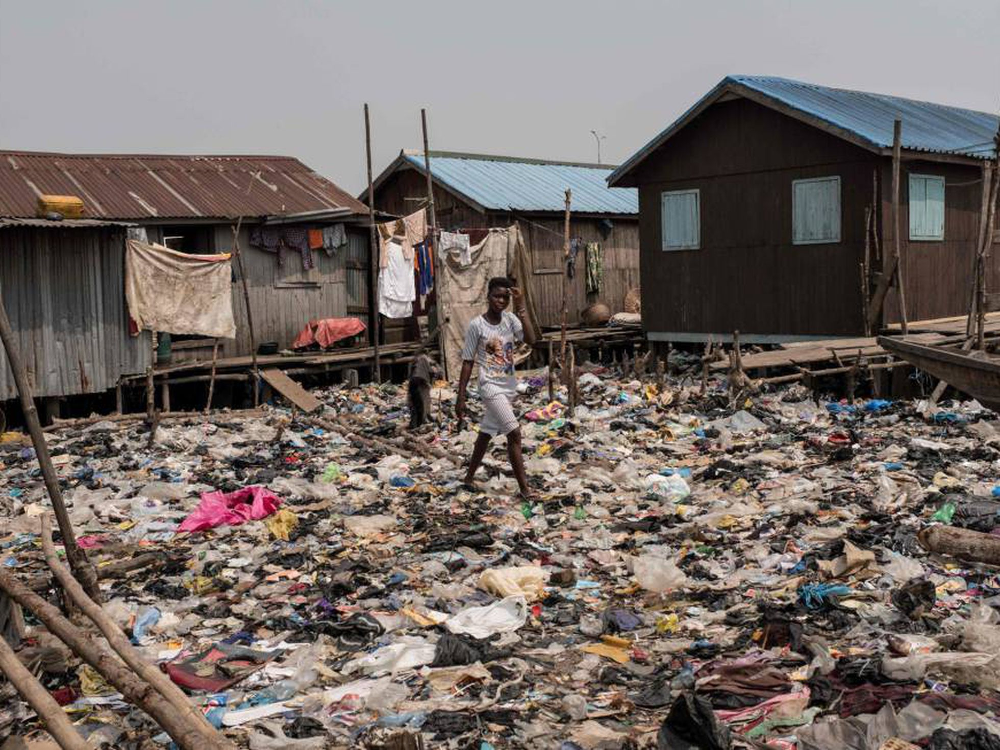
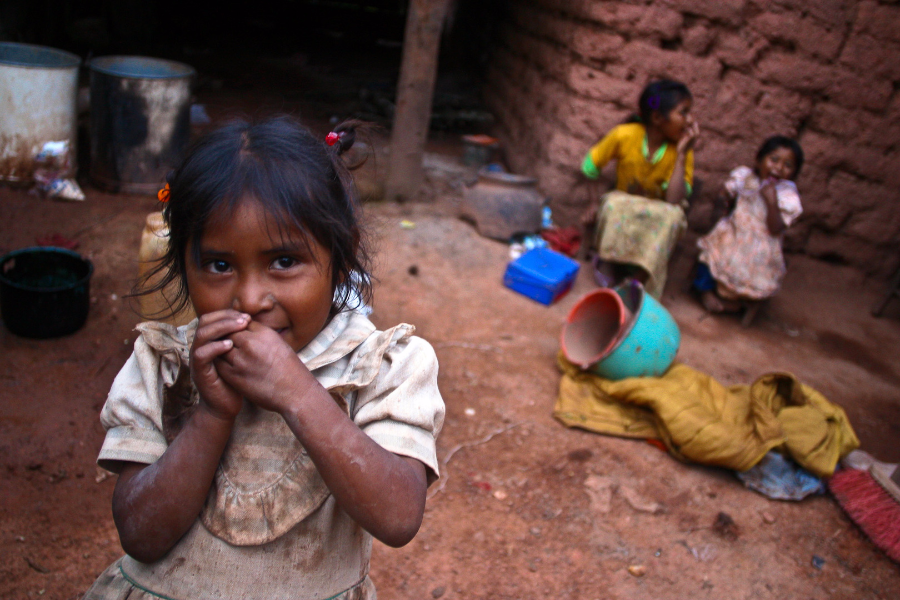

La pobreza es una situación en la cual no es posible satisfacer las necesidades físicas y psicológicas básicas de una persona, por falta de recursos como la alimentación, la vivienda, la educación, la asistencia sanitaria, el agua potable o la electricidad. La pobreza puede afectar a una persona, a un grupo de personas o a toda una región geográfica. También se suele considerar como pobreza a las situaciones en que la falta de medios económicos impide acceder a tales recursos. Situaciones como el desempleo, la falta de ingresos o un nivel bajo de los mismos. Siendo un tema que nos afecta a todos, ambos decidimos resolverlo
La solución más lógica para mi es la repartición de riqueza un poco más equitativa, aunque esto conflictúa con el sistema económico capitalista. Es claro que el gobierno tiene que involucrarse porque son parte de su población y están en esta situación gracias al sistema que está imppuesto sobre ellos por el gobierno. Programas del gobierno parecen funcionar si son organizados y son realizados honestamente. La ayuda humanitaria también es una buena solución ya que esta toma en cuenta la diferencia de adquisición financiera entre clases y se apoya en la buena voluntad de las personas.
Algo muy importante para combatir la pobreza es que todos nos ayudemos los unos a los otros para generar fuentes de empleo y todos tengamos ganancias economicas.
